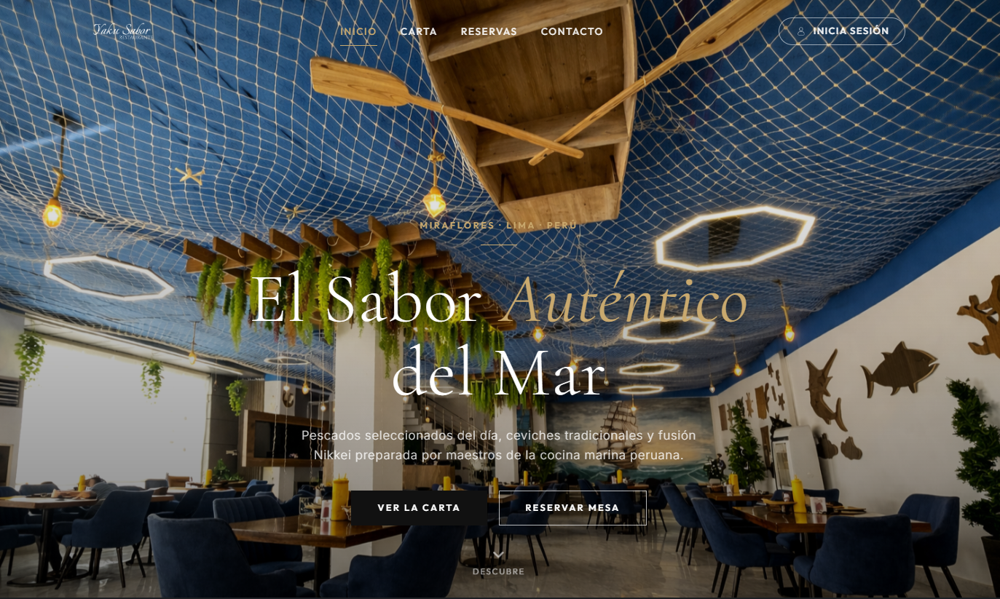

01 / Proyecto Académico Escalable
🌱 Spring Boot · JWT · PostgreSQL · BootstrapSistema de Gestión para Restaurante Marino (Yakusabor)
Aplicación web integral de arquitectura escalable con concurrencia multitarea en tiempo real. Implementé seguridad con autenticación JWT y control de acceso basado en 4 roles (Admin, Cliente, Cocina, Mozo), junto a un dashboard interactivo en PostgreSQL.